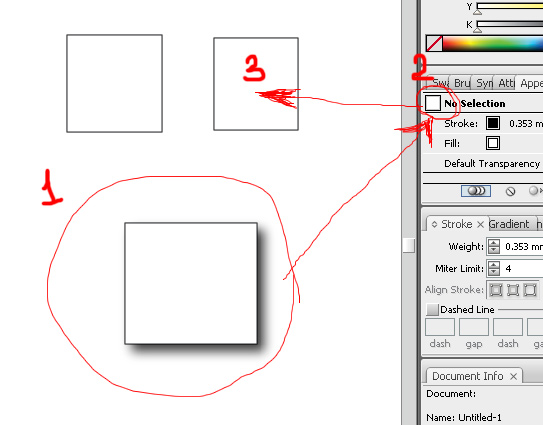
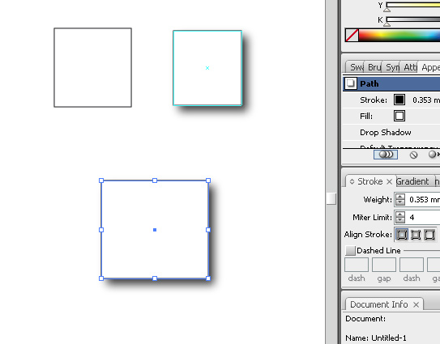
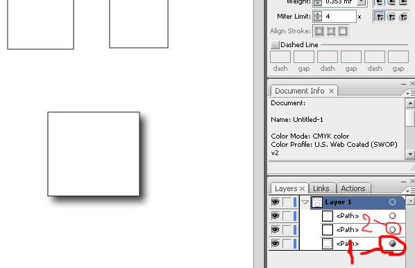
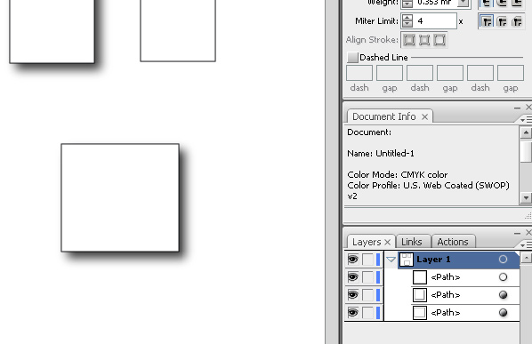

Скопировать эффект с одного объекта на другой
qsedftghk / 27.09.2010, 20:30/00:41
Форум:
И снова о панельке Appearance.
Для того, чтобы скопировать эффект с одного объекта на другой, можно воспользоваться таким способом:

Выделить объект с эффектом (см. на рисунке 1), затем открыть панельку Appearance, нажать левую кнопку мышки над штучкой :D (см. на рисунке 2), а затем не отпуская левой кнопки мышки навести указатель мышки на требуемый объект (см. на рисунке 3). Отпустить левую кнопку мышки. Всё.

Ну, и ещё один способ.

открыть палитру Layers.
найти в ней объект с эффектом.
зажать Alt, нажать левую кнопочку мышки над штучкой (см. на рисунке 1). Переместить указатель мышки на штучку (см. на рисунке 2) объекта без эффекта. Отпустить кнопку мышки.

О! прикольно, не знал даже :)
Всегда пользовалась вторым способом (со слоями), о первом и не подозревала Спасибо !
Можно ещё полученный результат(я имею ввиду оригинальный созданный стиль)перетащить в палитру Graphic Styles и применять его к выделенным обьектам и даже "увековечить" сохранив в библиотеке стилей.